Explore the Wiki
The original Deepworld servers shut down in 2019. The community has kept the game alive through:
- Brainwine — An open-source private server (github.com/kuroppoi/brainwine)
- Community Revival Server — A new server with a custom Windows client
- Active Discord — Community coordination and updates
Biomes
Deepworld features 7 distinct biomes, each with unique resources, enemies, environmental mechanics, and terrain. Worlds generate with a specific biome type that determines what you'll find.
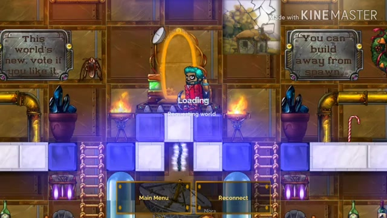
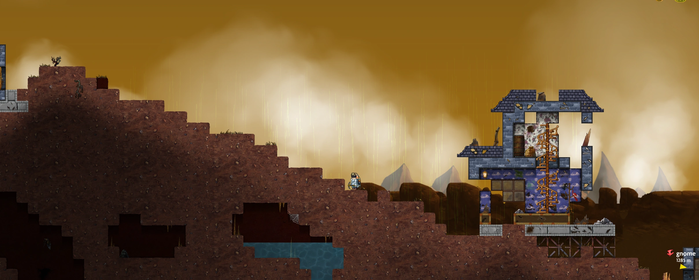
Temperate
The default starter biome with grassy terrain, trees, and varied underground ores. New worlds start with acid rain at 100% acidity. As you find all 8 Purifier parts and assemble the  Purifier, acid rain converts to normal rain, and the biome becomes lush enough for flowers and bulbs to grow.
Purifier, acid rain converts to normal rain, and the biome becomes lush enough for flowers and bulbs to grow.
Mushrooms (8 types)
 Portabella,
Portabella,  Oyster, Porcini, Willow, Amanita,
Oyster, Porcini, Willow, Amanita,  Chanterelle,
Chanterelle,
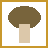
Morel,Environment
Acid rain damages players without Exo-skin protection. The  Purifier machine (8 parts found in green crates) neutralizes the acid rain when assembled. After purification, flowers and plants begin to grow naturally.
Purifier machine (8 parts found in green crates) neutralizes the acid rain when assembled. After purification, flowers and plants begin to grow naturally.
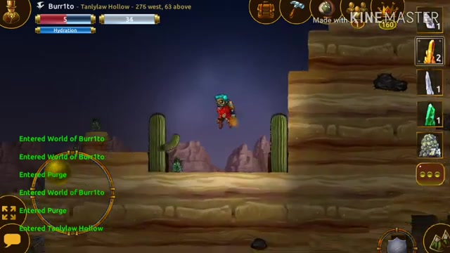
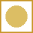
Desert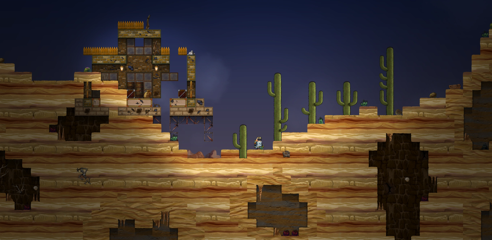
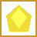
Yellow CrystalsDesert
A barren biome where cacti replace trees and sandstone ruins dot the landscape. The desert has a dehydration mechanic — a Hydration bar that depletes over time. Players must carry and use  Jars of Water to stay hydrated.
Jars of Water to stay hydrated.
Exclusive Resource:  Beryllium
Beryllium
Beryllium ore is found only in Desert biomes and is required for crafting  Energy weapons, weapon upgrade kits, and other advanced items.
Energy weapons, weapon upgrade kits, and other advanced items.
Mushrooms
 Portabella,
Portabella,  Oyster, Porcini,
Oyster, Porcini,  Chanterelle, Morel,
Chanterelle, Morel,  Acid, Anbaric Mushroom
Acid, Anbaric Mushroom
Unique Creatures
The desert is home to  Scorpions,
Scorpions,  Large Scorpions, Sand Worms, and the friendly
Large Scorpions, Sand Worms, and the friendly  Armadillo.
Armadillo.
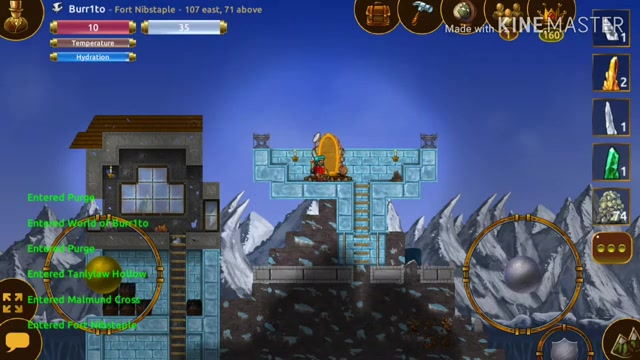
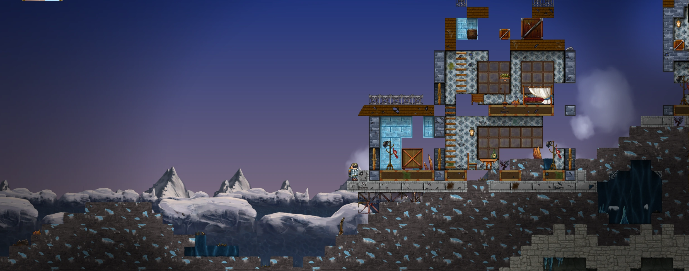
Arctic
A barren frozen biome with no trees and scattered ruins. The cold mechanic drains the player's warmth — without an Exo-skin, players lose HP over time. Arctic biomes are the only source of Diamond ore and have a 100% Onyx spawn rate.
Exclusive Resources
Diamonds are found only in Arctic biomes and are essential for Diamond-tier tools, weapons, and the Diamond Weapon Kit.
Special Bunkers
The Arctic has unique bunker types: Ice Sculpture Bunkers containing ice sculptures, and Present/Candy Cane Bunkers with candy canes, presents, and unique seasonal loot.
Mushrooms
 Portabella,
Portabella,  Oyster, Porcini,
Oyster, Porcini,  Chanterelle,
Chanterelle,  Arctic Mushroom
Arctic Mushroom
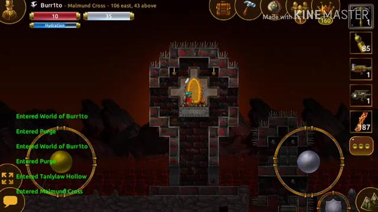
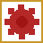
ExpiatorHell
A fire-themed biome filled with magma and hazards. The Expiator machine is unique to this biome — it consists of 8 parts that must be found and assembled, similar to the Purifier. Skeleton Terrapus are the primary enemy here, immune to most weapon types. The biome contains  Bloodstone as a resource.
Bloodstone as a resource.
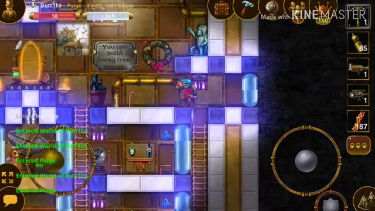
Deep
An underground biome shrouded in darkness.  Flashlights and light sources are essential for navigation. The Deep biome features unique underground terrain and resource deposits.
Flashlights and light sources are essential for navigation. The Deep biome features unique underground terrain and resource deposits.
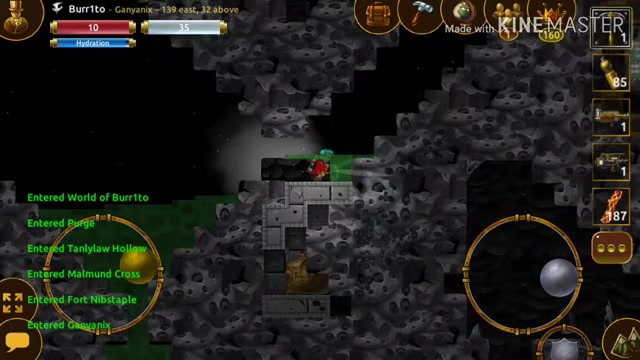
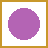
BrainBrain
The homeland of the
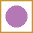
Brain creatures. This biome is populated primarily by Baby Brains and other Brain variants. It serves as the origin point for Deepworld's most iconic enemy faction.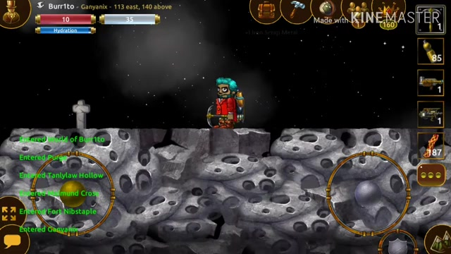
Space
The Space biome was released as a major Christmas update. It is the exclusive source of Platinum ore, used to craft the highest tier of tools: Platinum Pickaxe, Platinum Shovel, Platinum Spade, and Platinum Net.
Mobs & Creatures
Deepworld is populated with a variety of hostile, neutral, and friendly creatures. Each mob has specific stats, behaviors, and loot tables.
Terrapus Family
The Terrapus (plural: Terrapi) are the most common aggressive mob in Deepworld. The name comes from "terra" (earth) + "octopus" — earth octopus. They do not follow players but can climb walls.
| Name | HP | Damage | XP | Weakness | Defense | Biome |
|---|---|---|---|---|---|---|
| Juvenile Terrapus | 0.5 | Piercing 0.3 | 1 | — | — | All (surface) |
| Adult Terrapus | 0.8 | Piercing 0.5 | 2 | Fire 0.3, Piercing 0.2, Crushing 0.3 | Acid 0.2 | All |
| Fire Terrapus | 1.5 | Fire 0.75 | 3 | Cold 0.4, Crushing 0.2 | Fire 1.3, Steam 1.1 | Any (fire spawn) |
| Acid Terrapus | 1.5 | Acid 0.55 | 3 | Crushing 0.2 | Acid 1.3 | Temperate (rare) |
| Skeleton Terrapus | 2.0 | Energy 0.3 | 3 | Crushing 0.2 | Energy 1.3, Cold 0.5, Fire 0.5 | Hell only |
| Frost Terrapus | 1.5 | Cold 0.55 | 3 | Fire 0.4, Crushing 0.2 | Cold 1.3 | Arctic |
| Queen Terrapus | 25.0 | Piercing 2.0 | 25 | — | Acid 1.0, Cold 0.5, Energy 0.2 | Boss |
| Pet Terrapus | — | None (friendly) | — | — | — | Red chest loot |
Brains
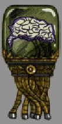
Brains are among the most iconic enemies in Deepworld. Found in dungeons, Brain biomes, and mechanical maws, they attack with energy cannons and use force shields for defense.
| Name | HP | Damage | XP | Notes |
|---|---|---|---|---|
| Tiny Brain | 3 | Energy 0.3 | 5 | Has force shield |
| Juvenile Brain | 7 | Energy 0.3 | 10 | Has force shield, drops Shillings |
| Adult Brain | 11 | Energy 0.4 | 20 | Drops Shillings (20), canisters |
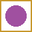 Dire Adult Brain | 18 | Energy 0.5 | 30 | Drops Shillings (30), spawns from 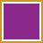 Pandora |
| Brain Lord | 34 | Energy 0.5 | 100 | Boss. Drops Shillings (100), cloaks |
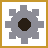
AutomataMechanical enemies found primarily in dungeons and scattered throughout the world. Weak to bludgeoning weapons (
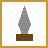
Sledgehammers, Tesla Club).| Name | HP | XP | Loot | Variants |
|---|---|---|---|---|
| 1.5 | 5 | Iron rubble, brass rubble, | Walker, Flyer | |
| Medium Automata | 6 | 10 | Iron/brass rubble, canisters | Walker, Flyer |
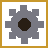 Large Automata | 15 | 20 | Canisters, ectoplasm | Walker, Flyer |
Gun-equipped Automata variants also exist: Acid, Bullet, Energy, Flame, Frost, and Steam gun types.
 Supernatural
Supernatural
Ghostly and undead entities found in certain biomes and dungeons.
| Name | HP | Damage | XP | Speed |
|---|---|---|---|---|
| 3 | — | — | 3 | |
| Revenant | 6 | Shadow | 10 | 3 |
| Dire Revenant | 12 | Shadow (burst 8) | 20 | 5 |
| Revenant Lord | 31 | Shadow | 80 | 4 |
 Desert Creatures
Desert Creatures
Creatures unique to the Desert biome.
| Name | HP | Damage | XP | Notes |
|---|---|---|---|---|
| 1.75 | — | 3 | Common desert enemy | |
| 5.5 | Piercing 0.9 | 5 | Stronger variant | |
| Sand Worm | — | Fire 1.0 | — | Emerges from sand |
| 2.0 | None | — | Friendly, passive creature |
Other Creatures
Small Animals
| Name | HP | Behavior | Notes |
|---|---|---|---|
| Rat | 0.9 | Friendly | Found underground |
| Bat | 1.1 | Neutral | Found in caves |
| Crow | — | Friendly | Passive bird |
| — | Friendly | Passive bird |
Butterflies (8 types, catchable with Net)
Eight varieties of butterflies can be found and caught using a Net tool. Higher-tier nets increase catch chance.
Fish (8 types)
Almaco Jack, Angelfish, Clownfish, Codfish, Flame Hawkfish, Herring, Piranha, Sergeant Major
Anemones
Standard, Electric, Magenta, Red — found underwater.
 Androids
Androids
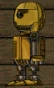
Androids are the rarest mobs in Deepworld — only 6 spawn per world. They are metallic-gold humanoid figures that wear hats.
- Free Loot: Each android gives free loot once per day per player
- Consecutive Bonus: Collecting from the same android for 5 consecutive days grants a special item on the 5th day
- Shilling Trade: Use Shillings to trade with androids (requires Barter skill)
- Figurines: Use Shillings +
 marble/
marble/ bloodstone ores to enlarge android figurines
bloodstone ores to enlarge android figurines
Pets
Friendly companion creatures that follow the player.
| Pet | Source |
|---|---|
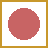 Pet Terrapus | Rare red chest loot |
| Special loot | |
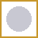 Pet Bunny | Special loot |
| Pet Skunk | Special loot |
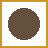 Pet Vulture | Special loot |
 Weapons & Combat
Weapons & Combat
Deepworld features ranged firearms, melee weapons, and bombs. Ranged weapons consume steam to fire. Weapons can be upgraded using Diamond and Onyx Weapon Kits.

 Gun Parts (Craft First)
Gun Parts (Craft First)
Before crafting any ranged weapon, you need to craft the component parts:
| Part | Recipe |
|---|---|
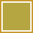 1x Brass | |
 Weapon Upgrade Kits
Weapon Upgrade Kits
| Kit | Upgrade | Recipe | Skill Req |
|---|---|---|---|
| Base → MK2 | 3x Diamond + | Engineering 8 | |
| Base → MK3 | 2x Onyx + | Engineering 10 | |
| Diamond Turret Kit | Turret MK1 → MK2 | — | — |
| Onyx Turret Kit | Turret MK2 → MK3 | — | — |
Ranged Weapons
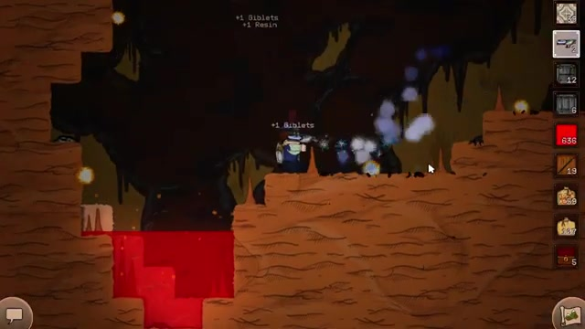
Non-Elemental
| Weapon | Damage | Rate | Crafting | Skill |
|---|---|---|---|---|
| Piercing 0.175 | 2 | Building 2 | ||
| Piercing 0.219 | 3 | — | ||
| Piercing 0.263 | 4 | — | ||
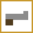 Musket | Piercing 0.2 | 3 | Building 3 | |
| Musket MK2 | Piercing 0.25 | 4 | — | |
| Musket MK3 | Piercing 0.3 | 5 | — |
Steam Element
| Weapon | Damage | Crafting | Skill |
|---|---|---|---|
| Fire 0.15 | Engineering 3 | ||
| Fire 0.225 | Engineering 5 |
Flame Element
| Weapon | Damage | Crafting | Skill |
|---|---|---|---|
| Flame Pistol | Fire 0.25 | 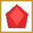 Red Crystal | Engineering 5 |
| Flamethrower | Fire 0.375 | Engineering 7 |
Frost Element
| Weapon | Damage | Crafting | Skill |
|---|---|---|---|
| Frost Pistol | Cold 0.25 | Engineering 5 | |
| Cold 0.375 | Engineering 7 |
Acid Element
| Weapon | Damage | Crafting | Skill |
|---|---|---|---|
| Acid Cannon | Acid 0.3 (burst 3) | Engineering 6 |
Energy Element
| Weapon | Damage | Crafting | Skill |
|---|---|---|---|
| Energy 0.225 | Engineering 6 | ||
| Energy 0.3375 | Engineering 8 |
Melee Weapons

Slashing (Effective vs Organic Mobs)
| Weapon | Damage | Crafting | Skill |
|---|---|---|---|
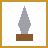 Hatchet | Slashing 0.15 | Building 2 | |
| Diamond Hatchet | Slashing 0.2 | 3x Diamond + 2x Brass + 2x | Building 4 |
| Slashing 0.25 | 8x | Building 4 | |
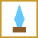 Diamond Rapier | Slashing 0.3 | 4x Diamond + 5x | Building 6 |
| Slashing 0.35 | 3x Onyx + 5x | Building 8 |
Bludgeoning (Effective vs Mechanical Mobs)
| Weapon | Damage | Crit | Crafting | Skill |
|---|---|---|---|---|
| Sledgehammer | Bludg. 0.2 | 1% | — | |
| Fine Sledgehammer | Bludg. 0.25 | 2% | Building 2 | |
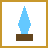 Diamond Sledgehammer | Bludg. 0.3 | 3% | 4x Diamond + 2x | Building 4 |
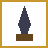 Onyx Sledgehammer | Bludg. 0.35 | 4% | 3x Onyx + 2x | Building 6 |
| Tesla Club | Energy 0.375 | 2.5% | 2x Brass + 2x | Engineering 5 |
| Cane | Bludg. 0.075 | — | 5x | Building 2 |
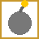
BombsBombs are throwable explosives with various effects. Some destroy the environment; others deal only mob damage.
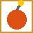
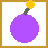
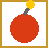
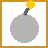
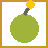
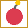
 Tools
Tools
Tools are essential for mining, digging, gardening, and creature catching. Higher tiers provide more mining power and faster operation.
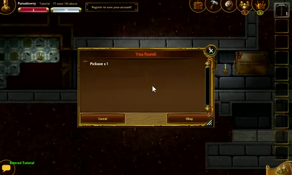
Pickaxes
Primary mining tool. Higher power means faster mining and ability to break tougher blocks.
| Pickaxe | Power | Damage | Crafting | Notes |
|---|---|---|---|---|
| 1.4 | 0.125 | Starter tier | ||
| Fine Pickaxe | 1.9 | 0.175 | — | |
| 2.35 | 0.225 | Diamond tier materials | Requires Diamond ore | |
| 2.75 | 0.275 | Onyx tier materials | Requires Onyx | |
| Platinum Pickaxe | 2.75 | 0.275 | Building 9. Highest tier |
 Shovels
Shovels
Dig through protected areas. Useful for accessing blocked-off sections.
| Shovel | Tier |
|---|---|
| Base | |
| Diamond | |
| Onyx | |
| Platinum (highest) |
 Spades
Spades
Used with the Horticulture skill. Spades recoup bulbs when mining flowers, allowing you to replant them.
| Spade | Tier |
|---|---|
| Base | |
| Diamond | |
| Onyx | |
| Platinum (highest) |
Nets
Used to catch butterflies and insects. Higher-tier nets increase catch success rate.
| Net | Tier |
|---|---|
| Net | Base |
| Diamond Net | Diamond |
| Onyx Net | Onyx |
| Platinum Net | Platinum (highest) |
 Items & Resources
Items & Resources
A comprehensive list of resources, ores, crystals, and other items found throughout Deepworld.
 Ores
Ores
| Ore | Rarity | Found In | Uses |
|---|---|---|---|
| Common | Near surface, all biomes | Copper blocks, crafted into Brass | |
| Common | All biomes | Weapons, tools, crafting | |
| Common | All biomes | Combined with Copper to make Brass | |
| Brass | Processed | Copper + Zinc (smelting) | Weapons, machines, accessories |
| Quartz | Moderate | All biomes | Tesla Club, Butler Bots |
| Lead | Moderate | Various | Crafting |
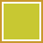 Sulfur | Moderate | Various | Crafting |
| Diamond | Rare | Arctic only | Diamond-tier tools, weapons, kits |
| Rare | Desert only | Energy weapons, upgrade kits | |
| Onyx | Super Rare | Any biome (100% in Arctic) | Onyx-tier gear, currency |
| Platinum | Very Rare | Space only | Platinum-tier tools |
| Rare | Hell biome | Special crafting, figurines | |
| Rare | Various | Special crafting, figurines | |
| Common | Trees | Basic building, tool handles | |
| Common | Surface | Composter ingredient | |
| Stone | Common | All biomes | Building |
| Sand | Common | Desert, beaches | Building |
| Common | Various | Crafting | |
| Common | Trees (byproduct) | Fine-tier crafting | |
| Common | Surface | Textile crafting |
Crystals
| Crystal | Found In | Uses |
|---|---|---|
| Temperate biome | Various crafting | |
| Arctic biome | Steam weapons, items | |
| Yellow Crystal | Desert biome | Various crafting |
| Red Crystal | Various | Weapons (fire, frost, acid, energy) |
| Various | Butler Bots, advanced crafting | |
| Various | ||
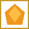 Orange Crystal | Various | Crafting |
| Rare | Special crafting |
Mushrooms
| Mushroom | Biome |
|---|---|
| Temperate, Desert, Arctic | |
| Temperate, Desert, Arctic | |
| Porcini | Temperate, Desert, Arctic |
| Willow | Temperate |
| Amanita | Temperate |
| Temperate, Desert, Arctic | |
| Morel | Temperate, Desert |
| Temperate, Desert | |
| Anbaric Mushroom | Desert |
| Arctic |
 Consumables
Consumables
| Item | Effect | Source |
|---|---|---|
| Restores hydration (Desert) | Fill jar at water source | |
| Acid Cannon ingredient | Collect from acid pools | |
| Restores HP | Survival 2 crafting | |
| Enhanced HP restoration | Survival 3 crafting | |
| Restores steam | Loot from containers, mobs | |
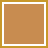 Filet | Food item | Fish processing |
| Buff item | Crafting | |
| Special consumable | Loot | |
| Special consumable | Wine Press | |
| Stealth Cloak | Temporary invisibility | Loot, crafting |
| Heart | Health restoration | Loot |
| Random item | Events, loot |
 Containers
Containers
| Container | Notes |
|---|---|
| Standard storage | |
| Found in dungeon airships | |
| Various barrel types | |
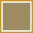 Sack | Sack storage variants |
| Green crates contain | |
| Pandora Box | Special reward pools, spawns Dire Adult Brain |
| Jar | Empty jar, fill with water or acid |
| Hydration in Desert | |
| Used in Acid Cannon recipe |
Keys
Fossils
Currency
| Currency | Use | Source |
|---|---|---|
| Crowns | Standard currency for purchases | Trading, shops |
| Onyx | Rare currency for valuable items | Mining (rare) |
| Shillings | Android trading (Barter skill) | Brain kills, loot |
Shields
| Shield | Protection |
|---|---|
| Acid damage reduction | |
| Fire damage reduction | |
| Force Shield | Force/energy damage reduction |
Skills
Deepworld has 11 skills that define your character's abilities. Each skill can be leveled up to improve its effects. Without Premium, the max skill level is 3.
Faster movement, climbing, and swimming. Higher jumps, reduced physical damage, longer stealth cloak duration.
Accessories:  Brass Boot (+1), Diamond Boot (+2), Onyx Boot (+3)
Brass Boot (+1), Diamond Boot (+2), Onyx Boot (+3)
Trading with  androids using Shillings. Enables access to Barter Androids and improved trade deals.
androids using Shillings. Enables access to Barter Androids and improved trade deals.
Currency: Shillings (obtained from Brain kills)
Craft better items and place blocks farther away. Essential for base building and crafting progression.
Accessories: T-Square
Gun efficiency, critical hit rate, and bomb damage. Improves overall weapon effectiveness.
Accessories:  Brass Scope (+1), Diamond Scope (+2), Onyx Scope (+3)
Brass Scope (+1), Diamond Scope (+2), Onyx Scope (+3)
Craft advanced weapons and devices. Use steam more efficiently. Required for elemental weapons.
Accessories: Sprocket, Widget
Plant bulbs and reclaim bulbs when mining flowers using a  Spade. Enables farming and flower cultivation.
Spade. Enables farming and flower cultivation.
Accessories:  Rake (+1), Diamond Rake (+2), Onyx Rake (+3)
Rake (+1), Diamond Rake (+2), Onyx Rake (+3)
Better loot quality and quantity from crates, chests, and containers.
Accessories:  Clover (+1),
Clover (+1),  Horseshoe (+2), Rabbit Foot (+3)
Horseshoe (+2), Rabbit Foot (+3)
Mine faster and deeper. Level 2 unlocks deeper layers, Level 4 unlocks more block types.
Accessories:  Mining Glove (+1), Diamond Glove (+2), Onyx Glove (+3)
Mining Glove (+1), Diamond Glove (+2), Onyx Glove (+3)
Map abilities and zoom. L2: See teleporters. L3: See explored areas. L4+: Zoom out further.
Accessories:  Stopwatch (+1), Pocketwatch (+2), Onyx Pocketwatch (+3)
Stopwatch (+1), Pocketwatch (+2), Onyx Pocketwatch (+3)
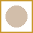
10. StaminaIncreases max HP and unlocks additional accessory slots. More stamina = more survivability.
Accessories: Seashell (+1), Sand Dollar (+2), Conch (+3)
Reduced acid and fire damage. L2: Craft  Jerky. L3: Craft
Jerky. L3: Craft  Power Jerky. Essential for hostile biomes.
Power Jerky. Essential for hostile biomes.
Accessories:  Army Knife (+1), Diamond Army Knife (+2), Onyx Army Knife (+3)
Army Knife (+1), Diamond Army Knife (+2), Onyx Army Knife (+3)
Skill Boosters Table
| Skill | +1 | +2 | +3 |
|---|---|---|---|
| Agility | Diamond Boot | Onyx Boot | |
| Combat | Diamond Scope | Onyx Scope | |
| Horticulture | Diamond Rake | Onyx Rake | |
| Luck | Rabbit Foot | ||
| Mining | Diamond Glove | Onyx Glove | |
| Perception | Pocketwatch | Onyx Pocketwatch | |
| Stamina | Seashell | Sand Dollar | Conch |
| Survival | Diamond Army Knife | Onyx Army Knife | |
| Automata | Brass Whistle | Diamond Whistle | Onyx Whistle |
| Building | T-Square | ||
| Engineering | Sprocket, Widget | ||
 Accessories
Accessories
Accessories are equippable items that boost skills, provide utilities, or grant special abilities. Accessory slots are limited by Stamina level.
Utility Accessories
 Machines & Structures
Machines & Structures
Machines are advanced devices that provide special functionality. Most require finding parts scattered throughout the world.
World Machines
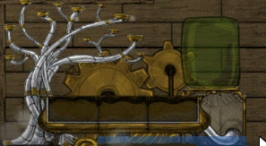
Assembled from 8 parts found in green crates. Purifies the world by stopping acid rain. After activation, rain becomes normal and flowers/plants can grow.
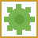
Composter
Combines earth + guano to produce compost. Compost is used for growing plants and flowers.
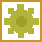
RecyclerBreaks down items into their base materials. Useful for reclaiming resources from unwanted items.
Hell biome exclusive machine. Assembled from 8 parts, similar to the Purifier. Releases  ghosts and affects the biome's supernatural activity.
ghosts and affects the biome's supernatural activity.
 Teleportation
Teleportation
6 per world, found in dungeons as unrepaired units. Once repaired, they enable fast travel.
Limit: Cannot place within 50 blocks of other teleporters
Named target for the Target Teleporter. Place at a destination and link to a Target Teleporter.
 Orange Portal: Transports to a different server/world (costs 40 crowns)
Orange Portal: Transports to a different server/world (costs 40 crowns)
Blue Portal: Transports within the same world
Butler Bots
| Bot | Recipe | Skill | Notes |
|---|---|---|---|
| Brass Butler Bot | 20x Brass Reinforced + 10x Quartz + 2x | Automata 4 | Base tier helper bot |
| Diamond Butler Bot | — | — | Higher tier |
| Onyx Butler Bot | — | — | Highest tier, can transport magma |
Turrets & Defense
Turrets are craftable defensive weapons. Can be upgraded with Diamond and Onyx Turret Kits (MK1 → MK2 → MK3).  Tesla Coil is a mini-tesla energy device.
Tesla Coil is a mini-tesla energy device.
Crafting Stations

 Protectors
Protectors
The only way to prevent other players from mining your structures. Available as Micro Protector (tiny range) and Small Protector (larger range). Craftable with Engineering 13. Tradeable if level 20+ or premium.
 Bunkers & Dungeons
Bunkers & Dungeons
Underground structures containing loot, enemies, and machine parts. Multi-looting allows anyone within 5 seconds to loot the same containers.
Bunkers
Abandoned underground shelters containing resources and sparkling barrels/crates with loot.
Found in most biomes. Contains basic resources and sparkling barrels/crates that yield loot when opened. A good source of early-game materials and equipment.
Found exclusively in Arctic biomes. Contains ice sculptures along with standard bunker loot.
Found exclusively in Arctic biomes. Contains candy canes, presents, and unique seasonal loot items.
Dungeons
Contains Brains, Automata, turrets, and spike traps. Loot chests scattered throughout with progressively better rewards deeper in.

Sky-based dungeons found in the upper atmosphere. Feature spinning rotors, mechanical obstacles, and  Mechanical Chests as the primary loot source. No safes are present.
Mechanical Chests as the primary loot source. No safes are present.
A special encounter triggered by opening a Pandora Box. Spawns a Dire Adult Brain (18 HP, Energy 0.5, 30 XP). Rewards include special loot pools with Shillings (30) and unique items.
 Airship Types
Airship Types
| Type | Loot | Features |
|---|---|---|
| Main dungeon loot, spinning rotors, no safes | ||
| Red chest rewards | ||
| Standard container loot |
 Gameplay Guide
Gameplay Guide
A comprehensive guide to getting started and progressing in Deepworld.
Getting Started
When you first enter Deepworld, you'll spawn in a Temperate biome world. Your first priorities should be:
- Craft a basic Pickaxe (
 Wood + Iron Rubble) to begin mining
Wood + Iron Rubble) to begin mining - Gather Wood from trees and Iron Rubble from surface deposits
- Build a basic shelter to store items
- Craft a Sledgehammer (Wood + 2x Iron Rubble) for fighting mechanical enemies
Leveling & Skills
XP is earned by killing mobs, mining, and completing activities. As you level up, you gain skill points to invest in 11 skills. Key early skills:
 Mining — Mine faster and access deeper layers
Mining — Mine faster and access deeper layers- Building — Craft better items and weapons
- Stamina — More HP and accessory slots
- Engineering — Unlock elemental weapons
Without Premium, max skill level is 3.
Crafting Progression
- Base tier: Iron, Wood, basic materials
- Fine tier: Iron +
 Resin upgrades
Resin upgrades - Diamond tier: Diamond ore from Arctic biomes
- Onyx tier: Onyx ore (rare, 100% in Arctic)
- Platinum tier: Platinum ore from Space biome (highest)
Exploration

- Temperate: Safe starting zone; find Purifier parts in green crates
- Desert: Beryllium (exclusive); bring
 Jars of Water
Jars of Water - Arctic: Diamonds + 100% Onyx; bring Exo-skin
- Hell: Bloodstone; Expiator machine; Skeleton Terrapus
- Space: Platinum (exclusive); highest-tier tool materials
Building & Protection
Use blocks to build structures.  Protectors (Micro and Small) prevent other players from mining your builds. Craftable at Engineering 13.
Protectors (Micro and Small) prevent other players from mining your builds. Craftable at Engineering 13.
Currency & Trading
- Crowns: Standard currency
- Onyx: Rare currency for high-value trades
- Shillings: Earned from Brain kills; used for Android trading
Combat Tips
 Slashing (Rapiers, Hatchets) → effective vs organic mobs (Terrapi)
Slashing (Rapiers, Hatchets) → effective vs organic mobs (Terrapi)- Bludgeoning (Sledgehammers) → effective vs mechanical mobs (Automata)
- Elemental (Fire, Frost, Acid, Energy) → use opposing elements
Community

Deepworld was developed by Bytebin and launched in 2012 as a 2D sandbox crafting MMO. The game was available on iOS and Steam, gaining a dedicated community.
In 2019, the original servers were shut down, ending the official era of Deepworld.
After the official shutdown, the community refused to let the game die:
- Brainwine — An open-source private server (github.com/kuroppoi/brainwine)
- Community Revival Server — A new server with a custom Windows client
- Join the Deepworld Discord
- Download the community client from the Discord
- Connect to the community revival server
Sprite Catalog
The complete Deepworld sprite sheet containing all game items, blocks, mobs, and objects.
Full Deepworld sprite sheet — all items, blocks, mobs, and objects.